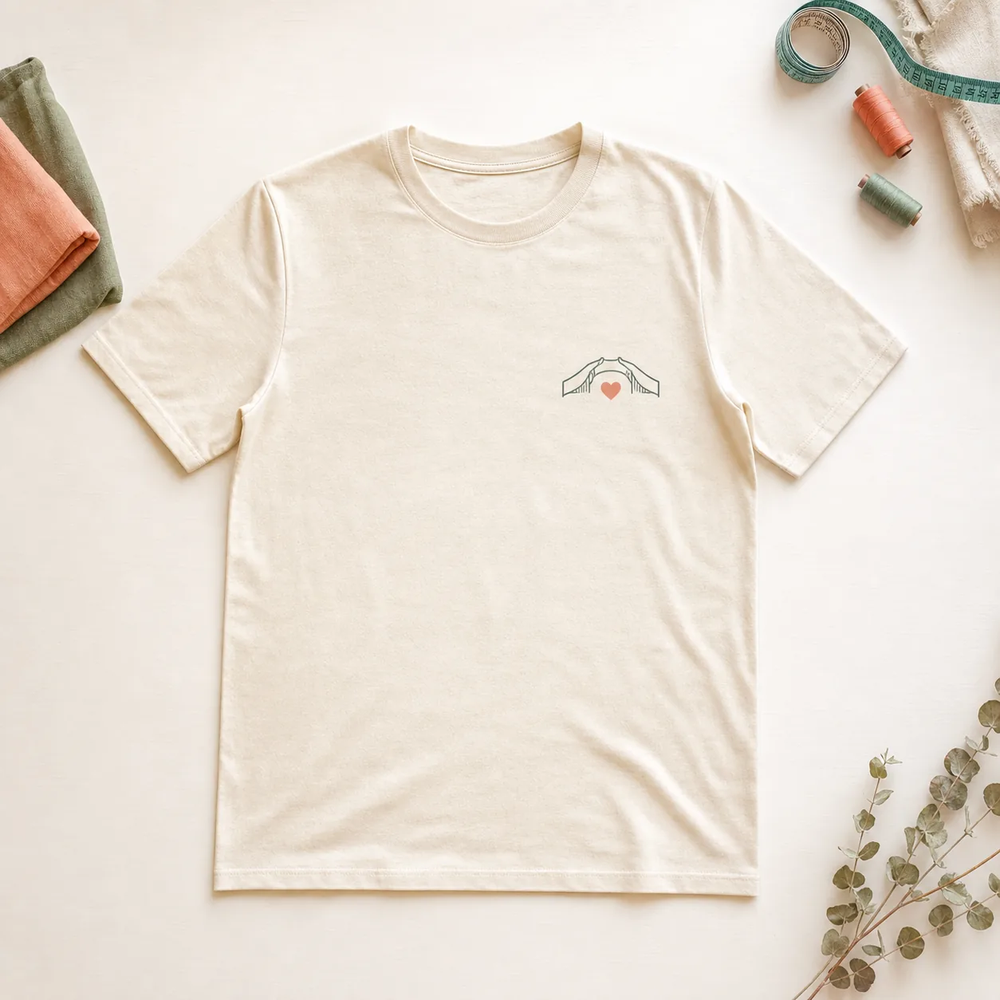

Stars I Can Follow T-shirt
A soft cotton shirt featuring a night-sky drawing created during a student and community art session. Each star represents a goal the artist hopes to reach.
Sample story: Mei's night sky
Mei enjoys drawing the sky from her bedroom window. She chose five stars for five things she values: family, music, learning, friendship, and courage. Students helped prepare the final print while keeping her original lines and color choices.